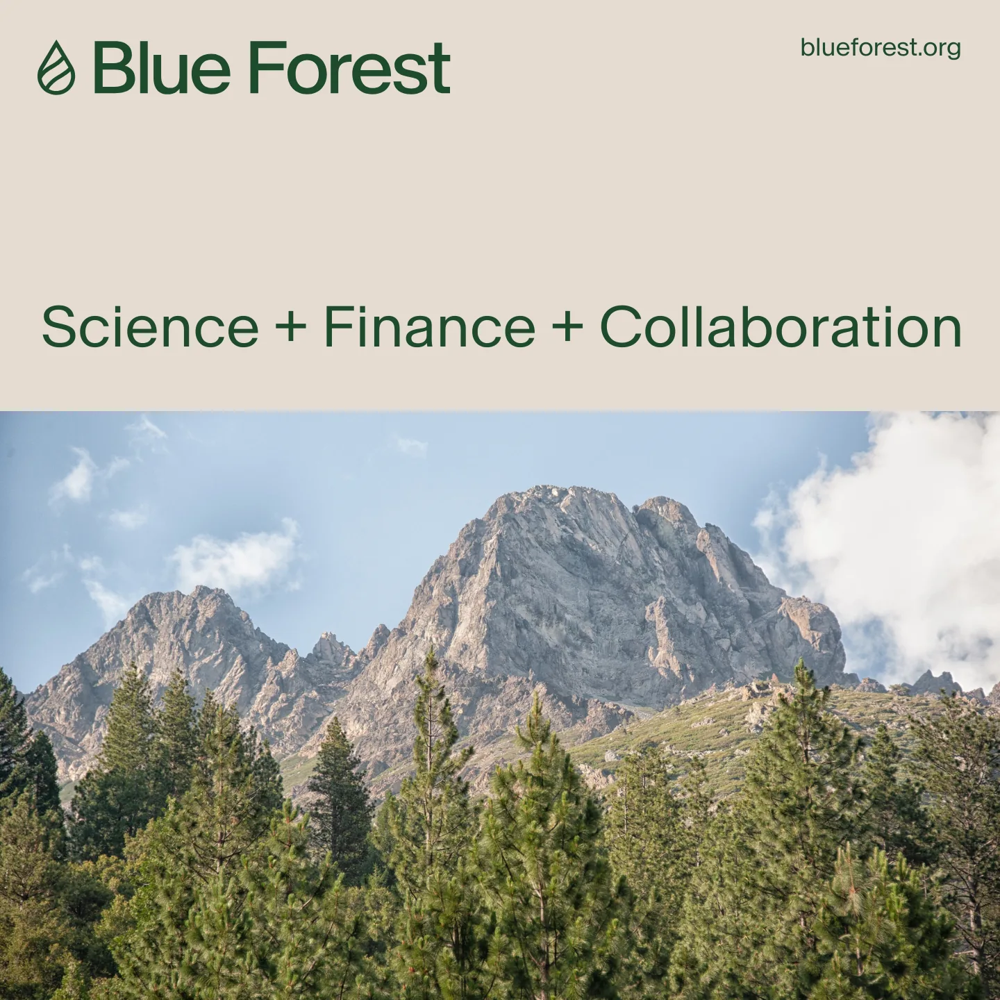
Storytelling & Communications Development Senior Associate, Sept. 2024 - present (Portfolio link)
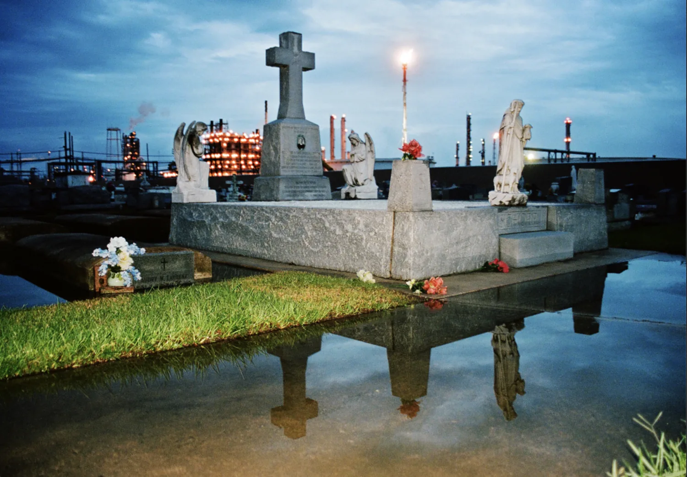
Camera operator, Cancer Alley (Vice on Showtime)
NAMIC Vision Award nomination
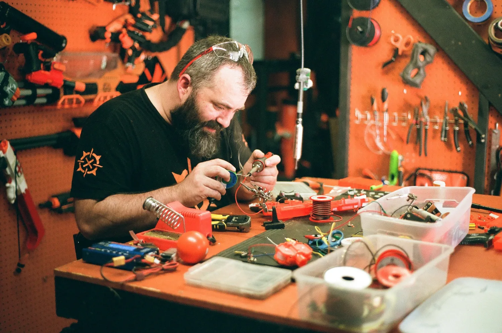
Camera and drone operator, Training With a NERF Militia (Vice News Tonight)
Producer and photographer, Städtepartnerschaft, sister cities (City of Celle, Tulsa Global Alliance, US State Department, and German Bundestag)
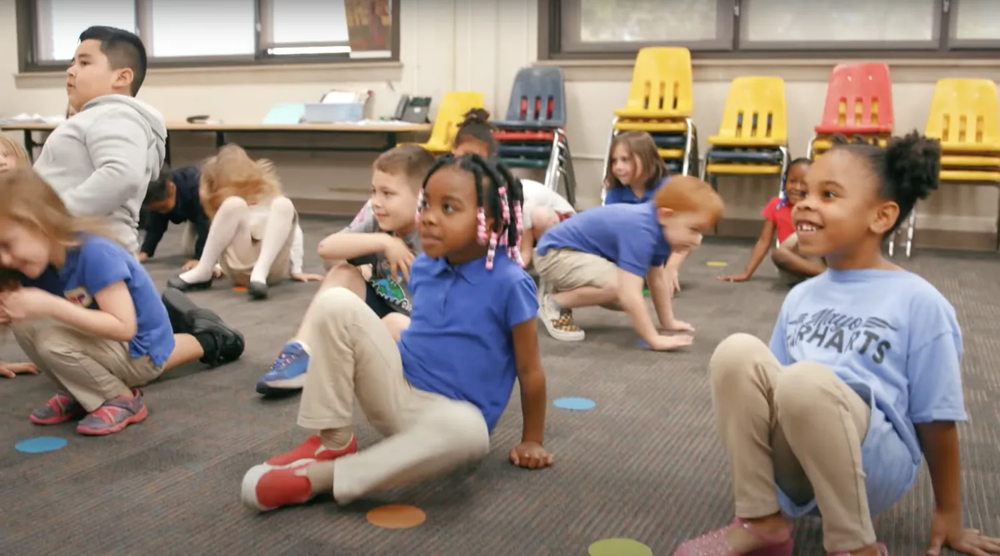
Field producer and camera operator, My Brother's Keeper Model Community: Tulsa, Oklahoma (The Barack Obama Foundation)
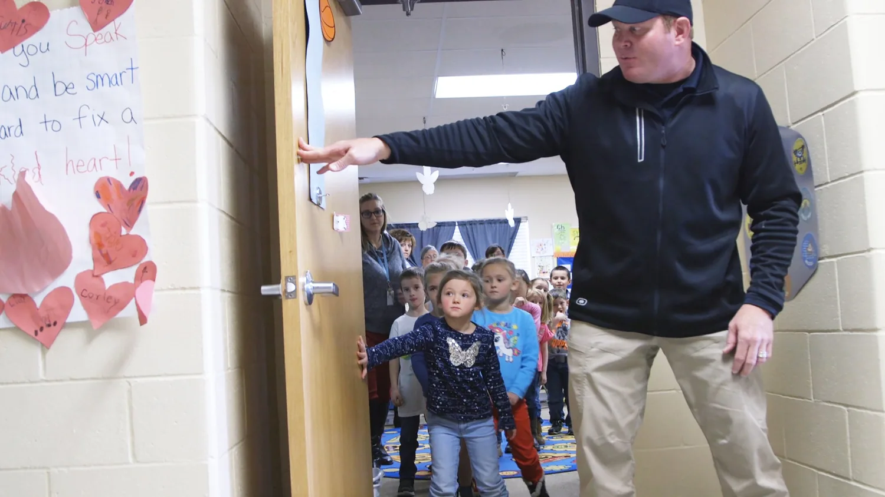
Director, cinematographer, co-editor, You Know the Drill
Streamed with PBS for 2 years and received a NFFTY award nomination
Associate Producer, Season 17
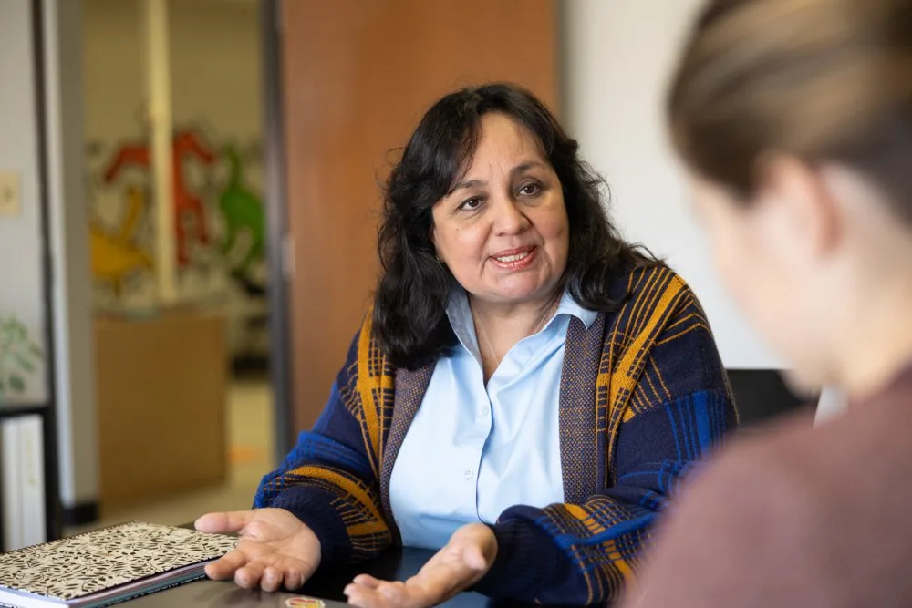
Author, ‘Tuesdays at El Centro’ (Birth through Eight Strategy for Tulsa)
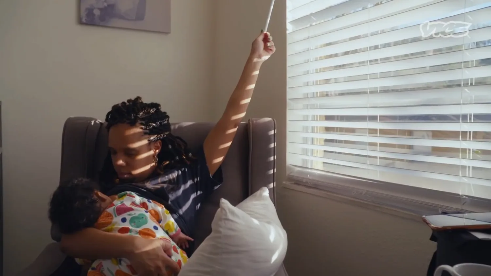
Camera operator, The Breast Milk Business Is Booming (Vice News Tonight)
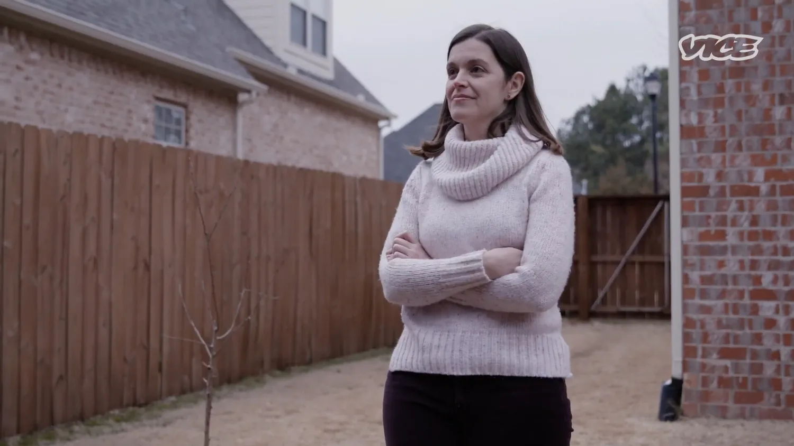
Camera operator, The Mothers Facing Eviction During COVID (Vice News Tonight)

Camera operator, Untitled German Memorialization Project
Supported by Fulbright grant
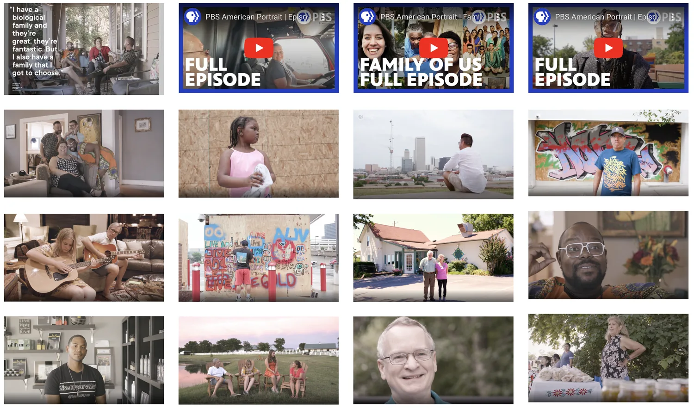
Producer, camera, editor on 19 micro documentaries, PBS American Portrait (RadicalMedia)
Webby Award nomination. Personal recognition from Tulsa World
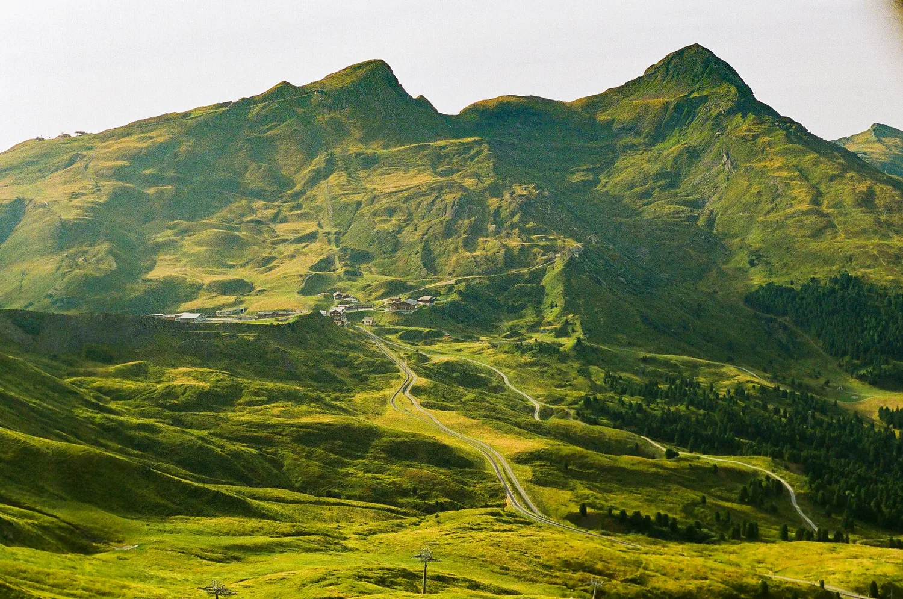
Associate Producer, October 2022-March 2023
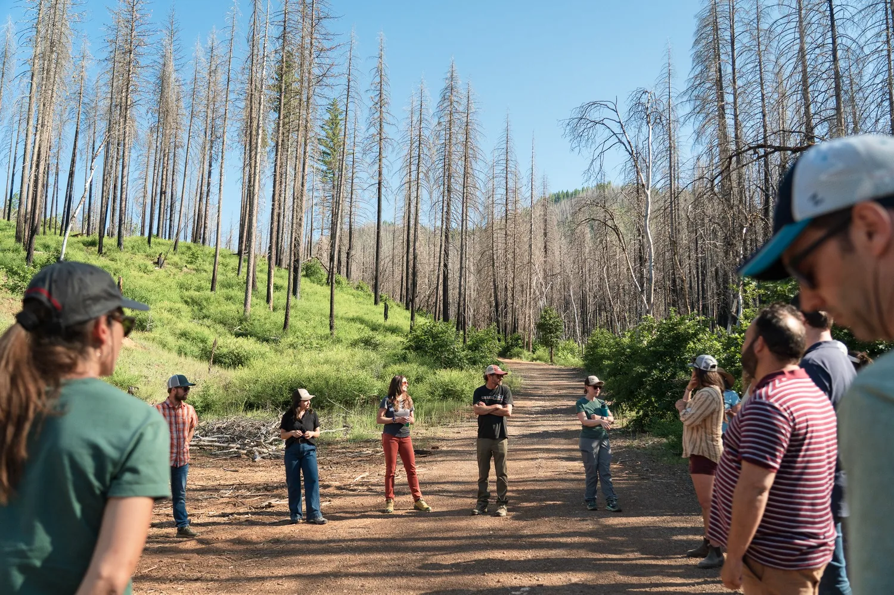
Camera operator and editor, North Feather I Forest Resilience Bond (Blue Forest)
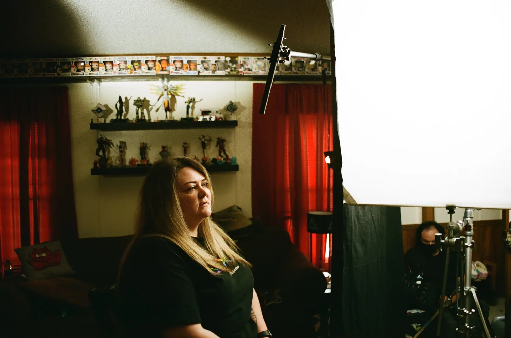
Drone operator and assistant camera, The Big Squeeze: GameStop, Reddit and an Economic Disaster (Vice Specials)
News & Documentary Emmy nomination for Outstanding Business and Economic Documentary
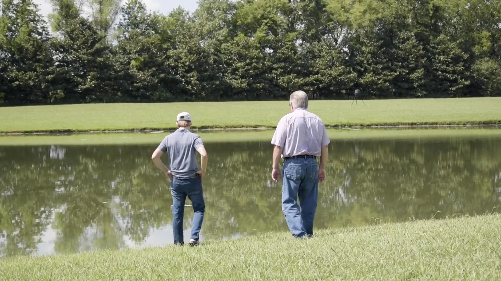
Director and editor, Soiled (Southern Exposure Film Fellowship | Alabama Rivers Alliance)
Premiered with Alabama Public TV and is now used by the Southern Environmental Law Center and Sierra Club chapters to advocate for local environmental policy change
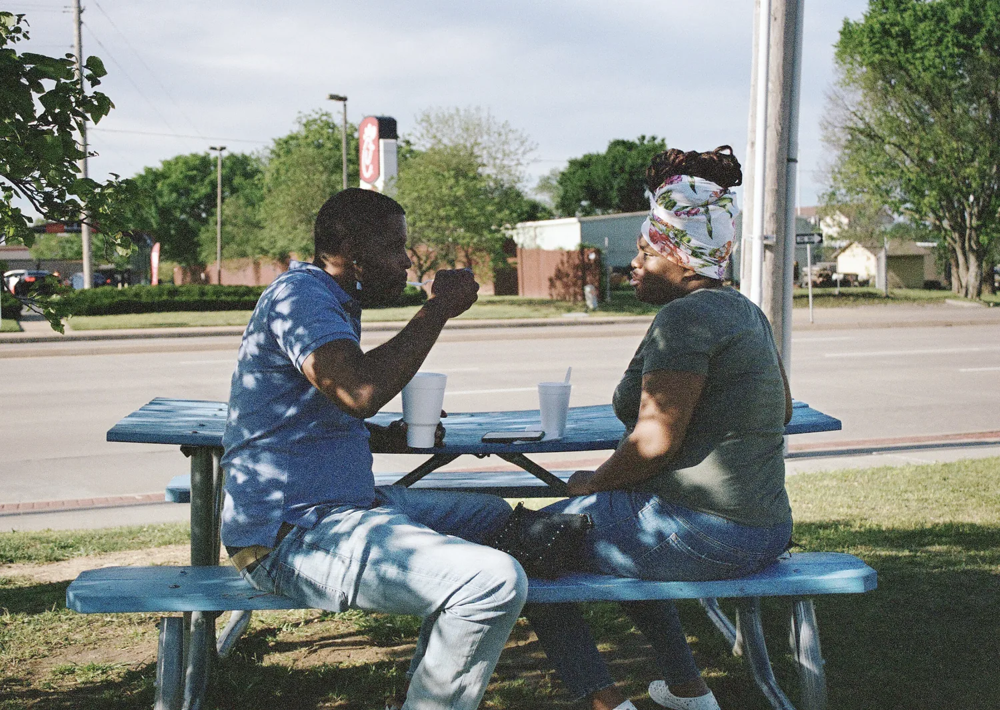
Camera operator, Aftershock (Onyx Collective | ABC News Studios | Hulu)
Sundance Impact for Change award
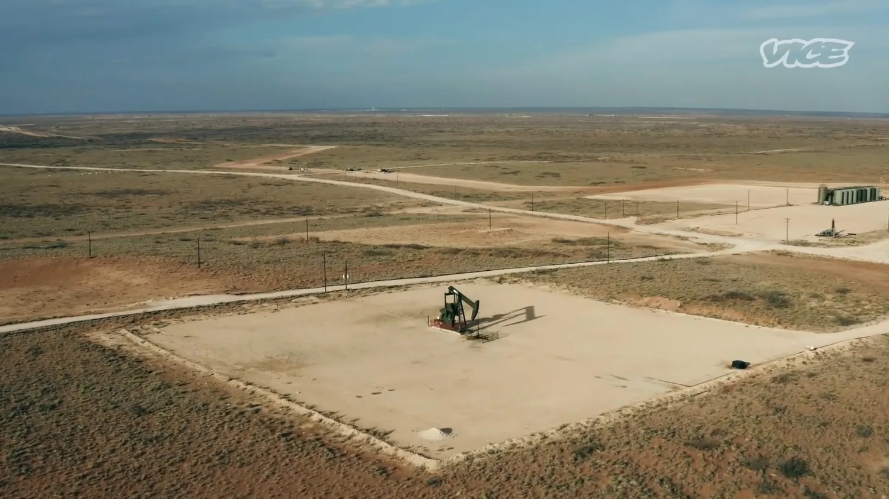
Camera and drone operator, Biden's Freeze On Oil and Gas Leases Is Putting Teachers in a Bind (Vice News Tonight)
Camera operator, Austin Residents Can’t Agree on How to Fix the Homelessness Crisis (Vice News Tonight)
Director, cinematographer, co-editor, One Nation Under Guns
Student Emmy nomination from Television Academy Foundation
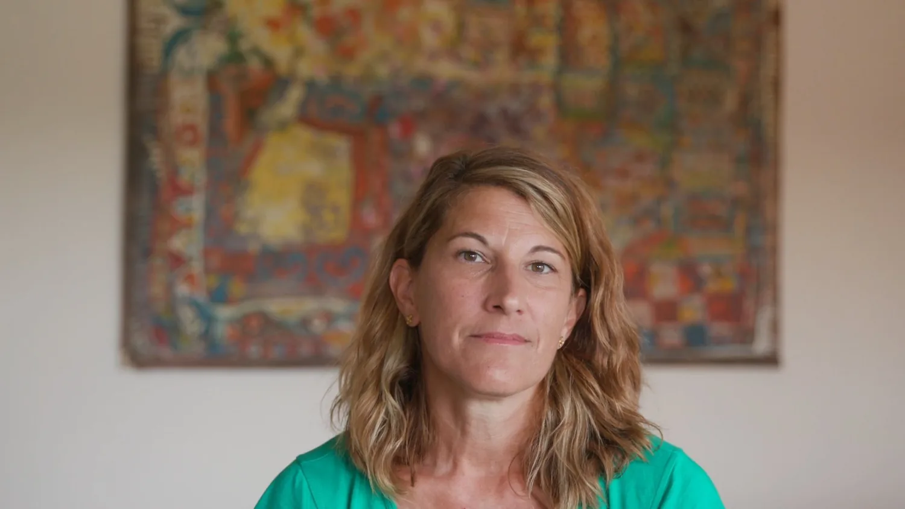